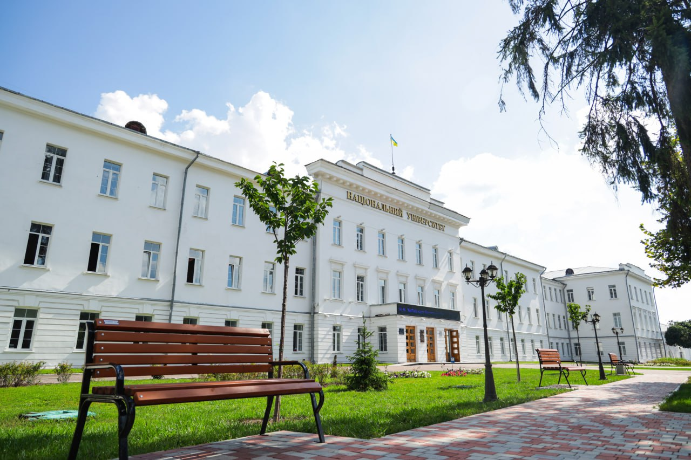
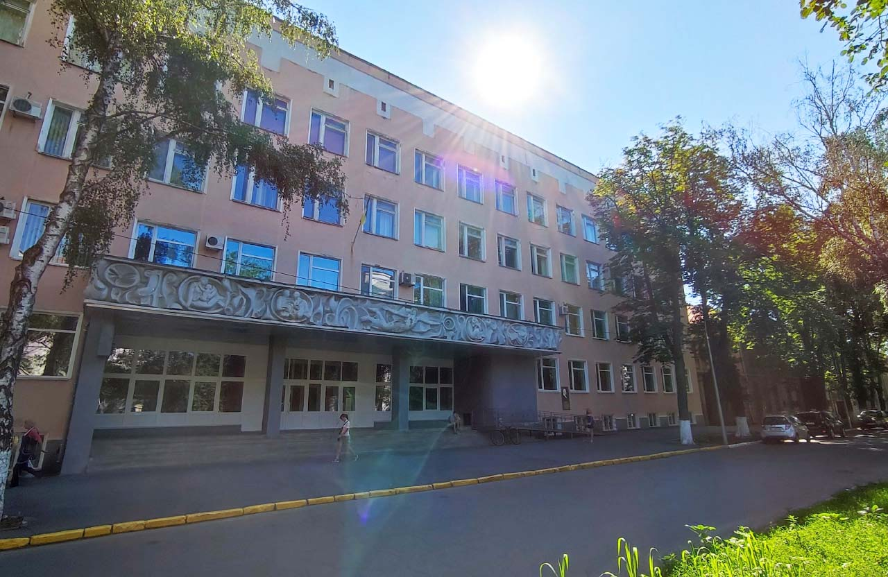
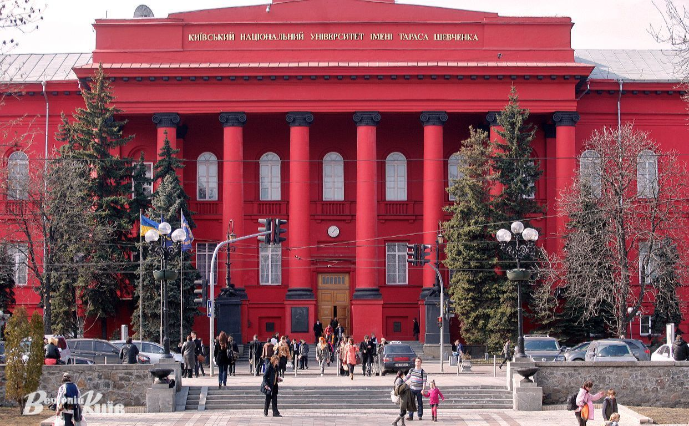
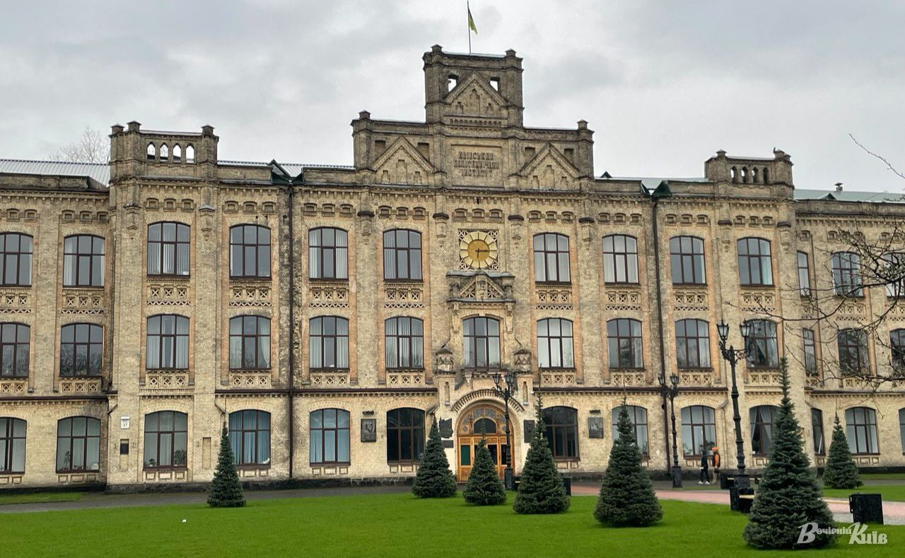
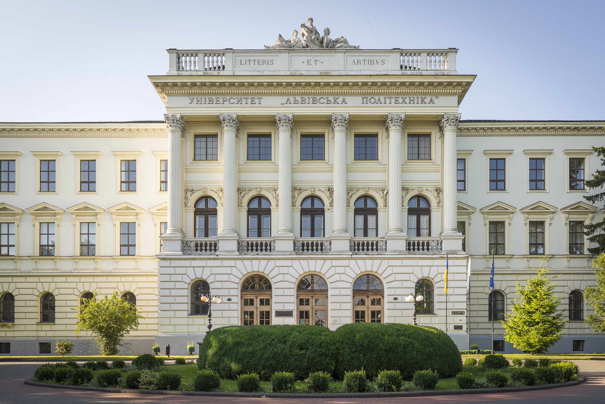

Інформація про всі наукові конференції в Україні 2024
Наукова конференція в Полтавській Політехніці: Інновації та розвиток
Наукова конференція, присвячена інноваціям та розвитку, відбудеться в Полтавській політехніці. На конференції будуть обговорюватися найновіші досягнення в галузі інновацій, сучасні тенденції розвитку технологій, а також результати наукових досліджень. Захід спрямований на об'єднання наукової спільноти, обмін знаннями та досвідом між учасниками
Наукова конференція в Полтавському педагогічному університеті: Педагогіка та сучасні виклики

Наукова конференція в Полтавському педагогічному університеті присвячена актуальним питанням педагогіки та сучасним викликам в освіті. Основна мета конференції - обговорення інноваційних методів викладання, інтеграції новітніх технологій в освітній процес та підвищення якості навчання. У конференції братимуть участь педагоги, науковці та освітяни, що поділяться своїми дослідженнями та досвідом з впровадження інновацій в педагогіку.
Наукова конференція в КНУ: Суспільні науки та глобалізація
Київський національний університет імені Тараса Шевченка запрошує на наукову конференцію, присвячену суспільним наукам та глобалізації. Конференція спрямована на обговорення впливу глобалізаційних процесів на суспільство, економіку та культуру.
Основні теми конференції включають:
- Соціальні зміни в умовах глобалізації
- Економічні виклики та можливості в глобальному контексті
- Культурні процеси та їх трансформація
Наукова конференція в КПІ: Інженерія та інновації
Національний технічний університет України «Київський політехнічний інститут імені Ігоря Сікорського» проводить наукову конференцію, присвячену інженерії та інноваціям. Конференція охоплює новітні дослідження в галузі інженерних наук, розробку інноваційних технологій та їх впровадження у виробництво. До участі запрошуються інженери, науковці та фахівці, які займаються розробкою та впровадженням інноваційних рішень у різних галузях промисловості.
Наукова конференція у Львівській політехніці: Екологія та сталий розвиток
Основні теми конференції:
- Екологічні дослідження та моніторинг
- Технології зменшення негативного впливу на навколишнє середовище
- Стратегії сталого розвитку в умовах зміни клімату
Участь у конференції візьмуть провідні екологи, науковці та фахівці з галузі сталого розвитку, що поділяться своїми дослідженнями та практичними рішеннями для покращення екологічної ситуації.